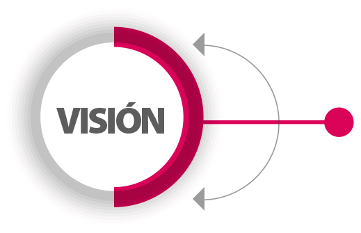

Misión

Garantizar una formación de excelencia a los estudiantes para que logren la resolución de problemas incentivando la creatividad y el respeto, además de aportar conocimientos respecto a tecnología y lenguas extranjeras de modo que faciliten su inserción en el campo laboral globalizado.
Visión
Contribuir significativamente en la formación de estudiantes en continuo crecimiento, de libertad de pensamiento y capacidades cognitivas que permitan el desarrollo de habilidades potenciales que les permitan acceder a niveles profesionales y a desenvolverse con facilidad en sus entornos sociales.
Valores
RESPETO: Para que los estudiantes sean capaces de dirigirse a sus compañeros, docentes y entorno social con armonía y diplomacia.
RESPONSABILIDAD: Resaltando la importancia de los deberes y obligaciones a los que se encuentran sujetos los alumnos y docentes.
TOLERANCIA: Para ser capaces de aceptar y empatizar con las ideas que difieren de las nuestras.